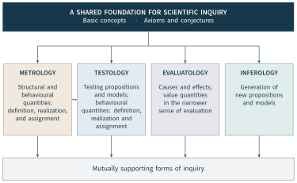
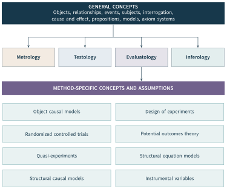

Open source collaboration makes a substantial part of software production observable. It does not make the significance of that production self-evident. A project can attract more activity while accumulating a larger maintenance burden. A widely reused component can receive little visible attention in its own repository. A contributor can improve the work of others through review, explanation, and coordination without producing the largest volume of code. Evaluation must explain which of these differences matters, under what conditions, and to whom.
This chapter establishes Open Source Evaluatology as a domain of Evaluatology. The parent discipline supplies an account of objects, conditions, causes and effects, and value. Our research on Activity, OpenRank, OpenDigger, and contribution recognition supplies methods and evidence through which that account can be developed for open collaboration. The aim is a cumulative field: concepts should guide empirical inquiry, and findings should be able to change those concepts and their operational realization.
The argument has three elements. An evaluation question must identify its object, affected parties, purpose, and reference. Measurements and models must be distinguished from the claims attached to their outputs. An evaluation arrangement can itself become an object of inquiry when its use changes collaboration. These elements provide the foundation for Chapter 2’s account of value and sustainability and Chapter 3’s research framework. Chapters 4–6 develop and examine the methods on which the synthesis rests.
1.1 The Evaluation Problem in Open Collaboration#
Three problems arising from the research#
The first problem is the visibility of useful work. In the OpenRank Leaderboard study, a selected maintainer’s participation consisted largely of coordination across issues and pull requests. A commit-based ordering gave a different account from the community network measure (Zhao et al., 2024, Section 4.1). The disagreement asks a substantive question: what contribution is the evaluation intended to recognize? More records or a more elaborate algorithm cannot answer that question without an account of the work being represented.
The second problem concerns the organization of participation. Our Activity study examined who contributed, what they did, when participation occurred, and where it appeared across the collaboration landscape (Xia et al., 2022). Its findings include concentrated participation, different mixes of human and automated behaviour, and temporal patterns. These are consequential observations, but their interpretation depends on the undertaking. Concentration can accompany expertise and continuity, or expose dependence on a small number of people. Distinguishing those possibilities requires evidence about responsibilities, substitutes, and the conditions of continued work.
The third problem appears when evaluation is put into use. Publishing a contribution ranking can change attention and behaviour. Participants in the leaderboard deployment reported changes in how they communicated and divided their work (Zhao et al., 2024, Section 4.2). Such responses can alter both collaboration and the public record through which collaboration is measured. The resulting inquiry has two objects: the representation of contribution and the arrangement that uses it. Evidence about the first does not settle the consequences of the second.
These problems explain the sequence of Part II. Chapter 4 establishes the observations and Activity measurements. Chapter 5 asks what a relational account adds and examines OpenRank. Chapter 6 supplies the infrastructure and follows evaluation into practice. The complete results belong there. In this chapter, the studies identify the conceptual commitments needed to understand those results and to ask further questions of them.
From separate research traditions to a common question#
Research on open source already offers substantial accounts of collaboration. The Apache and Mozilla cases connected participation and work organization to software outcomes; a later review distinguished inputs, processes, emergent states, and outputs (Mockus et al., 2002; Crowston et al., 2012). Open superposition explains how independently motivated layers of work can enable subsequent contributions (Howison and Crowston, 2014). These studies make clear why the significance of an action often depends on work performed by others.
The pull-based development literature gives that observation a concrete workflow. Submission, discussion, integration, and rejection are different events, with different implications for an artifact and the people maintaining it (Gousios et al., 2014). A submitted change can create review work without producing an accepted feature. A review can improve an artifact without adding a large volume of code. An evaluation must explain which stage it observes and which consequence it seeks to assess.
Our position paper began to organize such questions through Evaluatology’s objects, conditions, and results (Han et al., 2024). The present book develops that connection by retaining affected objects, reference alternatives, stakeholder purposes, and the consequences of use throughout the argument. It brings the domain framework into contact with the empirical and technical work on which the following chapters are built.
The resulting field has a common problem rather than a single preferred score. It asks how evidence about open collaboration can support a stated evaluative conclusion. A descriptive inquiry, a network comparison, and a deployment study can all contribute, provided their objects and interpretations remain explicit. Their conclusions become cumulative when the conditions under which they hold can be inspected and compared.
1.2 Foundations in Evaluatology#
A shared system of inquiry#
The initial formulation of Evaluatology emphasized the science and engineering of evaluation and the dependence of results on evaluation conditions (Zhan et al., 2024). The subsequent Chinese monograph develops a broader account centred on causes and effects and places Evaluatology within a proposed system of scientific inquiry (Zhan et al., 2026). We adopt its conceptual organization as a theoretical foundation while distinguishing that organization from the empirical evidence and method-specific assumptions needed in a particular study.
Figure 1.1 adapts the monograph’s first foundational diagram. Metrology concerns the definition, realization, and assignment of structural and behavioural quantities. Testology concerns the testing of propositions and models, as well as behavioural quantities. Inferology concerns the generation of propositions and models. Evaluatology investigates causes and effects, with the narrower activity of valuation concerned with quantities of value. Their relationship is mutually supportive: a model can guide measurement, measurements can challenge a model, and an evaluative question can determine which behaviours require testing.

For open collaboration, this arrangement clarifies the roles of familiar research activities. An operational definition of review latency is a measurement task. Checking the behaviour of a data-processing procedure is a testing task. Proposing that early review helps newcomers learn introduces a model of a relationship. Investigating whether a particular review arrangement changes subsequent participation is an evaluative task. The categories organize questions; a single empirical study may contain all four.
The conceptual hierarchy in Figure 1.2 provides a second foundation. The general level supplies terms such as object, relationship, event, subject, proposition, and model. The disciplinary level gives these terms more specific roles. The methodological level introduces the assumptions and operations of particular approaches to evaluation. This hierarchy helps prevent a frequent error: moving from a general statement about causes to the conclusion that a selected statistical procedure identifies them.

The eight method families in the source diagram are retained. They are not disjoint classes or interchangeable solutions. Experimental design concerns how observations are generated; potential outcomes and structural causal models provide different formal resources for posing and identifying causal questions; instrumental variables is a method requiring particular assumptions. An object causal model is another proposed representation with its own definitions. A place in a common conceptual hierarchy does not remove these differences.
The value of this hierarchy for the present book is architectural. It allows a common vocabulary to connect chapters without requiring them to use a single estimation technique. A study of review practices and a study of package dependencies can share a definition of an evaluation question while requiring different observation models, comparisons, and validation procedures.
Objects, systems, and conditions#
The monograph distinguishes an evaluated object (EO), affected objects (AOs), and other causally relevant objects, termed confounding objects (COs) in its framework (Zhan et al., 2026, Chapters 8 and 10). These are roles relative to a question. A contributor can be the evaluated object in a recognition study and an affected object in a study of a mentoring programme. A repository is an artifact and an observation site; it does not automatically delimit the community or the relevant causal system.
The term CO requires care when used alongside statistical terminology. The monograph’s object category concerns other objects that can influence the affected objects. It should not be equated without further argument with a confounder in a particular causal identification model. Whether an observed variable is a confounder, mediator, or consequence of selection depends on the question and the model. Translating an object-level account into a statistical design is substantive work.
The source further distinguishes a real-world system (RWS), a self-contained system (SCS), and an object causal model (OCM). An SCS is a physical experimental model containing the cause object, affected objects, and relevant objects that cannot be isolated. The evaluation condition (EC) is defined as the system remaining when the EO is removed. An OCM is a mathematical representation based on influence mechanisms among objects; it models a real-world or self-contained system and must be examined against observations or tests (Zhan et al., 2026, pp. 117–120).
These distinctions are useful precisely because they make modelling commitments visible. A database assembled from public events is an observation product. A simulated collaboration network is a mathematical construction. Neither becomes an SCS merely by selecting a subset of repositories. In an open community, preserving the relevant mechanisms while isolating an intervention can be difficult: contributors may work across groups, reviewers may share knowledge, and changes may reach downstream users. The investigator must explain which relationships the study preserves and which it abstracts away.
An object-based account also helps formulate mechanisms. A mentoring arrangement may affect a newcomer’s access to guidance; guidance may change the newcomer’s capability; the resulting work may affect a review team and eventually a release. Each relation suggests observations and possible alternatives. The framework’s role is to state those relations. Their existence and strength remain questions for the relevant evidence.
Effects and value#
The parent monograph defines value through the consequences, for stakeholders, of differences between the effects of an object and those of a reference object (Zhan et al., 2026, Chapter 11). This makes evaluation more demanding than attaching favourable labels to an activity. A change can improve one outcome and worsen another, and the parties affected need not agree on the importance of either. A maintainer may value fewer interruptions, a newcomer may value access to explanation, and a downstream organization may value predictable releases.
The private–collective innovation model and research on firms’ open source strategies explain why shared artifacts can support different forms of benefit (von Hippel and von Krogh, 2003; West and Gallagher, 2006). Our framework carries this insight into evaluation by keeping stakeholder-specific consequences explicit.
The distinction between effects and value is consequently analytical rather than a separation of research from practice. Evidence about effects constrains what a value judgment can reasonably claim. Purposes and stakeholder commitments determine which effects should be investigated and how they enter a decision. Chapter 2 develops this relationship in detail. Here it supplies the basis for specifying the domain and its research questions.
1.3 Open Collaboration as an Evaluation Domain#
A domain defined by objects and their relationships#
The position paper introduced project, developer, and community dimensions and combined statistical and network perspectives (Han et al., 2024). These dimensions are useful points of entry. The relevant object, however, can also be an artifact, a process, an organizational arrangement, or a relationship among several communities. Its boundary follows the evaluation question.
Open Source Evaluatology is the domain of inquiry that investigates the effects of objects and arrangements in open collaboration, evaluates the value of those effects under explicit conditions and purposes, and examines the consequences of evaluation itself.
A repository is a technical container and an observation site. A project organizes work on an artifact or a related set of artifacts. A community includes participants, practices, and governance whose boundaries may extend across repositories. An organization can participate in several communities, and an ecosystem connects undertakings through reuse, dependencies, shared people, and institutions. These terms identify different objects and levels; they should not become synonyms merely because a dataset offers one repository identifier per row.
The evaluated object can be located at one level while its effects occur at another. A component change can affect downstream applications. An organizational funding rule can alter the availability of maintainers across projects. A public recognition arrangement can affect the allocation of contributor effort. Ecosystem health research and studies of package dependencies demonstrate why an individual project’s observations can omit relevant interdependencies (Jansen, 2014; Decan et al., 2019). Enlarging a boundary is useful when it includes relationships required by the question, rather than simply producing a larger graph.
Stakeholders and affected objects likewise have different roles. A patch may affect a library’s behaviour; a service operator experiences consequences of using that library. In a learning-oriented community, the contributor can be both an affected object, through changed capability, and a stakeholder concerned with the value of that change. An evaluation should preserve these roles even when one entity occupies several of them.
An explicit specification of the question#
We use the working specification
where is the evaluated object or arrangement; identifies affected objects together with their outcome quantities; specifies conditions; is the reference alternative; is the time horizon; identifies stakeholders; and states the purpose. This tuple is the book’s organizing notation. It makes commitments inspectable and supplies no causal identification result by itself.
For a descriptive Activity inquiry, may be the recorded participation of a declared group of projects. The reference can be another period or comparison population. The purpose may be to characterize the composition of work. Relevant affected objects and outcomes can be named without claiming that the description estimates an effect on them. For a contribution-recognition study, the evaluated object can instead be the public arrangement; contributors, maintainers, and collaborative processes become affected objects. The reference concerns an alternative arrangement, and the horizon must be long enough to observe the consequences being claimed.
A mentoring example shows how the same specification supports a different design. The arrangement assigns experienced reviewers to newcomers. The affected objects include newcomers and reviewers; relevant quantities include learning, continuing participation, and effort. The reference might be the existing review process. Research on sustained participation and newcomer barriers helps specify these mechanisms and outcomes (Fang and Neufeld, 2009; Steinmacher et al., 2015). Those findings inform the question without establishing the effect of the particular arrangement being proposed.
The conditions include governance, eligibility, workload, platform affordances, and concurrent changes. They are broader than a set of regression covariates and should be distinguished from the specific evaluation-condition construction in Section 1.2. A data snapshot, identity rule, or algorithm version records how the question was realized. Changing such a rule can change a result even when community behaviour is unchanged. Chapter 3 makes these relationships operational through the five-component evaluation architecture.
The specification also identifies where disagreement lies. Researchers may disagree about the relevant community boundary, the interpretation of an outcome, the alternative against which it should be compared, or whose consequences matter. Those disagreements require different evidence and deliberation. Recording them explicitly helps prevent an apparently precise score from concealing an unresolved evaluation question.
1.4 From Measurements to Evaluative Claims#
What a measurement establishes#
A measurement assigns a quantity under a specified procedure. The validity of a stronger interpretation depends on what that procedure represents. Software measurement research examines units, instrumentation, protocols, and populations; assessment theory examines the evidence supporting score meaning and use (Kitchenham et al., 1995; Messick, 1995). These perspectives direct attention to the connection between a calculation and the claim it is asked to support.
Activity measures recorded participation under a behaviour selection, attribution rule, period, transformation, and aggregation. A larger value establishes a difference under that specification. It does not by itself establish better software or a more sustainable division of work. The SPACE framework makes a related distinction in developer productivity: activity is one dimension within a broader account of work and experience (Forsgren et al., 2021). In our setting, the intended collaborative function determines which additional evidence is needed.
OpenRank assigns influence or contribution through a specified graph and propagation model. Its score depends on the represented objects, relations, priors, and comparison population. Centrality research shows why an interpretation depends on the process that network connections are assumed to represent (Borgatti, 2005). A relational score can make coordination visible, but a high score is not an estimate of a person’s causal effect on every outcome of interest.
Prediction and explanation impose further requirements. A procedure may anticipate an outcome without explaining its causes, or explain a relationship without predicting new observations well (Shmueli, 2010). A causal claim requires a defensible account of the relevant alternative and the conditions under which its comparison identifies the effect. A value judgment then connects effects to stakeholder requirements. These distinctions allocate different responsibilities to the evidence.
| Claim | Example in open collaboration | Required connection |
|---|---|---|
| Description | Recorded participation increased. | Population, coverage, identity, eligible events, and period. |
| Measurement | Activity represents a specified account of participation. | Meaning of behaviours, attribution, units, transformation, and aggregation. |
| Relational influence | An actor receives a high OpenRank score. | Graph semantics, priors, propagation assumptions, and comparison population. |
| Prediction | A procedure anticipates a later outcome. | Test observations unavailable during fitting and selection; a stated target. |
| Causal attribution | A recognition arrangement changes collaboration. | Actual exposure, a defensible reference, and identification assumptions. |
| Value judgment | The arrangement warrants continued support. | Consequences, burdens, stakeholder requirements, and alternatives. |
Book synthesis. Examples state kinds of claim rather than new findings. These claims impose different evidential obligations; they are not an automatic progression from one to the next. Chapters 3–6 develop the corresponding designs, methods, and evidence.
Table 1.1 does not prescribe a ladder that every study must climb. A careful description can answer an important question. A simulation can test a mathematical interpretation under a stated mechanism. An implementation comparison can establish agreement in calculation. Each becomes misleading only when its conclusion is carried beyond what the design supports. Chapter 3 develops the references and validation procedures appropriate to these different claims.
A conditional account of value#
Let the effect contrast on the affected objects be represented by
The contrast may be a vector: changes in review delay, artifact reliability, newcomer capability, and maintainer effort need not share a unit or direction. When a causal interpretation is intended, the design must establish how the reference represents the relevant alternative. When it cannot, the result should be described as an observed comparison or association.
A stakeholder-specific valuation can then be written
The parent monograph defines a scalar value function from multidimensional differences in effects. Here is a broader assessment mapping for stakeholder under purpose : a scalar valuation can be supplied when justified, while an effect profile or an incomplete comparison can be retained otherwise. This extension preserves the object–effect relation without assuming that the evidence already supports a common utility scale.
A simple consequence clarifies why an unconditional ranking is often unwarranted. Suppose a decision uses an explicitly chosen linear valuation after orienting all outcome dimensions so that larger values are preferred and declaring their scaling. For two alternatives, let With admissible weights and , the value difference is . If every component of is non-negative, the first alternative weakly dominates under this family of valuations. If has a positive and a negative component, admissible weights concentrated on those respective components give opposite rankings.
This is a deduction under the stated additive model, not an empirical law of collaboration. It identifies a practical requirement: when effects conflict, a ranking depends on the permitted valuation choices. Where stakeholder commitments restrict the weights, the appropriate test is whether retains its sign over that restricted set. Where effects are uncertain, the uncertainty must be propagated as well. A ranking can be defensible, but its robustness must be demonstrated over the choices relevant to its use.
This result also shows why multidimensional evidence is valuable. Retaining separate outcomes allows readers to locate a disagreement in evidence, scaling, or priorities. Chapter 2 develops this formal distinction into a stakeholder effect profile and explicit conditions for accepting an arrangement. Section 3.5 then connects those conditions to a decision under uncertainty. A single score can be useful, but it should not conceal the judgments on which its use depends.
The practical consequence is to preserve the evidence at the level needed for judgment. A record of review actions, a representation of coordination, a change in release outcomes, and a stakeholder’s assessment of burden can all be relevant. Collapsing them too early can remove the information needed to understand why two evaluations disagree. Their integration should follow an explicit account of the object and its consequences.
1.5 Connecting Theory and Practice#
A connected body of research#
The methods developed in this book address complementary parts of the same evaluation problem. Activity makes several forms of participation measurable within a common behavioural account (Xia et al., 2022). OpenRank represents collaboration through typed relationships, allowing the allocation of influence or contribution to depend on surrounding work (Han et al., 2026a). OpenDigger supplies repeatable collection, contextual classification, metric computation, and access to the resulting evidence (Wang et al., 2026). The leaderboard deployment examines what happens when one such representation becomes visible in community practice (Zhao et al., 2024).
The two doctoral studies connect these contributions to a broader research programme. Xia’s research develops activity analysis alongside questions about project continuity and sustainability; Zhao’s research develops the data platform, relational evaluation, and their applications (Xia, 2024; Zhao, 2025). They provide context, derivations, and empirical material that a short article cannot always accommodate. A result repeated in a dissertation and an associated paper remains one evidence chain, however. Its repeated publication is not an independent replication.
This organization changes the role of theory. The object-and-effect account explains why Activity needs a population and interpretation, why OpenRank needs graph semantics and reference conditions, and why a deployment must specify the arrangement actually used. Chapter 2 gives those commitments substantive content through collective capability, stakeholder effects, and continuity. Chapter 3 turns them into research designs. Part II then supplies the calculations, experiments, and deployments through which the commitments can be examined.
Practice also changes the theory. A coordination case makes work visible that a code-centred description omits. An archived repository with a maintained successor prompts a distinction between the continuity of a repository and that of a function. A move from private discussion to public channels changes the observation process. These findings do more than illustrate a general vocabulary: they identify objects, mechanisms, and boundaries that the framework must represent if it is to remain useful.
Evaluation becomes an object of evaluation#
The leaderboard provides a particularly direct connection. In one inquiry, the object is the contribution representation: does it make relevant work visible, and do its scores admit a defensible interpretation? In another, the object is the deployed recognition arrangement: what changes when rankings, explanations, and repeated communication become part of community life? The affected objects and relevant outcomes differ across those inquiries.
Visible platform activity already supports social inferences and coordination; contribution acceptance is associated with social as well as technical information (Dabbish et al., 2012; Tsay et al., 2014). Deliberately publishing a recognition result can become another part of that setting. Campbell’s account of consequential indicators explains why changes in behaviour and in recorded statistics should be examined together (Campbell, 2011). The possibility is a research problem, not a presumption that every response to evaluation is undesirable.
Evaluatology permits an evaluation approach to be assessed through its own effects on results and affected parties (Zhan et al., 2026, Section 8.7.4). Open collaboration gives that recursive inquiry observable forms: changes in public communication, the division of work, the allocation of attention, and the effort needed to administer recognition. Benefits and burdens can coexist. Their existence, scale, and persistence require evidence beyond an increase in the score displayed by the arrangement.
Chapter 6 preserves the original deployment window, model, reported coefficients, descriptive changes, and interview findings. Chapter 3 reconstructs the completed design and explains the claims its evidence can support. The source’s calendar-time comparison does not make all concurrent changes disappear, and later additions to a recognition scheme do not describe every earlier exposure. These limits establish conditions for further inquiry while retaining the original study’s contribution.
Inherited concepts, domain constructions, and open propositions#
The theoretical commitments have different origins. Objects, affected objects, effects, self-contained systems, object causal models, and value derive from Evaluatology. The domain architecture and the practical research programme develop those ideas for open collaboration. The question specification , the explicit separation of evidential claims, and the connections among the chapters are this book’s synthesis.
The empirical support is correspondingly specific. Activity studies support an account of recorded participation. OpenRank’s formal analysis establishes properties of its operator under stated assumptions; its simulations and community cases examine further interpretations. OpenDigger’s experiments examine execution, and ORL examines an evaluation arrangement in use. Together they establish a substantial basis for the field while leaving broader claims about long-term capability, stakeholder benefit, and transfer across settings open to testing.
This separation helps the theory develop. When an interpretation fails, the appropriate revision may concern the selected object, the representation, the observation process, or the proposed mechanism. A computational improvement can repair one part of the inquiry while another remains unresolved. The purpose of a common framework is to make those relationships examinable and to retain what the evidence has established.
1.6 Research Questions and Scope#
Questions that the evidence makes answerable#
The first continuing question concerns representation: which forms of work are made visible, and which are lost, when public behaviour is turned into a measure? The Activity lineage makes changes in selection, weighting, and aggregation concrete. Answering the question requires retaining the original behaviour definitions and investigating what their transformations preserve. Historical results cannot be made comparable merely by giving them a common metric name.
The second concerns relationships: when does collaboration structure add information relevant to contribution or influence? The global and community OpenRank constructions provide distinct settings for that inquiry. The graph’s objects, relation types, and priors matter to the answer. A mathematical proof of convergence establishes that a calculation behaves as claimed; independent observations are needed for stronger assertions about the work or benefit represented.
The third concerns use: how does an evaluation change the undertaking to which it is applied? OpenDigger makes repeated observation and computation possible, while the ORL deployment supplies evidence about one public arrangement. Repeated data can reveal changes and help investigate explanations. Their interpretation still depends on the observation process, the reference, and the actual conditions of exposure.
Three propositions make the broader programme testable. Boundary sensitivity predicts that, where downstream dependence is consequential, local participation alone will omit information relevant to continuity. A comparison can test whether adding the relevant dependencies improves the interpretation or prediction of independently observed outcomes. A larger graph without such improvement would not establish the proposed advantage.
Relational complementarity predicts that typed collaboration relationships can add information beyond aggregate activity when the construct depends on who enables whose work. An ablation can hold data coverage and the task fixed while changing the representation, then examine independent outcomes and sensitivity. A stable ranking or stronger correspondence with a measure using the same inputs is insufficient by itself.
Evaluation reactivity predicts that public recognition can change the composition and recording of collaboration before a detectable change in long-term capability. A study can examine exposure, rewarded and unrewarded work, public visibility, and later outcomes. Changes that precede exposure or occur similarly in a justified comparison group would require a different explanation. These are propositions for further investigation, not conclusions already established for every community.
Scope of the present foundation#
The empirical foundation is open source software collaboration, principally observed through public development platforms. The studies concern particular populations, periods, and operational definitions. Private work, unrecorded use, and effects on parties absent from those platforms require additional evidence. Account identities, repository boundaries, and project labels are measurement choices, not complete descriptions of people or institutions.
Open models, datasets, and other collaborative artifacts create related questions, but their production processes, rights, and dependencies need separate examination. Public visibility, download availability, and permission to modify and redistribute are different conditions. Transferring a metric or framework to such a setting requires an account of what remains comparable and what changes. The present chapters provide a basis for asking that question rather than assuming the transfer has been validated.
The literature used here is a focused analytical selection of foundational and directly relevant work. It supports the argument without attempting to estimate the prevalence of findings across all open source research. The main evidence comes from the connected studies developed in this book. Their shared sources and overlapping populations remain identifiable, and conceptual extensions are distinguished from reported procedures and results.
The argument carried forward#
Part I now proceeds from a domain foundation to substantive theory and research design. Chapter 2 explains how collaborative work creates and renews collective capability, how effects matter to stakeholders, and how continuity can extend beyond a repository. Chapter 3 connects that account to questions, populations, models, references, and evidence, using three completed designs.
Part II implements and examines those designs. Chapter 4 develops Activity and its empirical account of participation. Chapter 5 establishes OpenRank’s operator, global and community constructions, and validation evidence. Chapter 6 develops OpenDigger and examines computation and deployment. Evidence is therefore present throughout the methods, rather than postponed to the application chapters.
Part III extends the inquiry across contribution recognition, community continuity, and ecosystem governance. Its task is to examine transfer, additional outcomes, and differences among settings, building on the method evidence already established. The concluding synthesis returns those findings to the field’s questions. The foundation offered here is a common language for that cumulative inquiry, with the objects, evidence, assumptions, and grounds of judgment open to inspection.
References#
Borgatti, S. P. (2005). Centrality and network flow. Social Networks, 27(1), 55–71. DOI: 10.1016/j.socnet.2004.11.008.
Campbell, D. T. (2011). Assessing the impact of planned social change. Journal of MultiDisciplinary Evaluation, 7(15), 3–43. DOI: 10.56645/jmde.v7i15.297. Reprint of Occasional Paper Series No. 8, December 1976.
Crowston, K., Wei, K., Howison, J., and Wiggins, A. (2012). Free/Libre open-source software development: What we know and what we do not know. ACM Computing Surveys, 44(2), Article 7. DOI: 10.1145/2089125.2089127.
Dabbish, L., Stuart, C., Tsay, J., and Herbsleb, J. (2012). Social coding in GitHub: Transparency and collaboration in an open software repository. In Proceedings of the ACM 2012 Conference on Computer Supported Cooperative Work, pp. 1277–1286. ACM. DOI: 10.1145/2145204.2145396.
Decan, A., Mens, T., and Grosjean, P. (2019). An empirical comparison of dependency network evolution in seven software packaging ecosystems. Empirical Software Engineering, 24(1), 381–416. DOI: 10.1007/s10664-017-9589-y.
Fang, Y., and Neufeld, D. (2009). Understanding sustained participation in open source software projects. Journal of Management Information Systems, 25(4), 9–50. DOI: 10.2753/MIS0742-1222250401.
Forsgren, N., Storey, M.-A., Maddila, C., Zimmermann, T., Houck, B., and Butler, J. (2021). The SPACE of developer productivity: There’s more to it than you think. ACM Queue, 19(1), 20–48. DOI: 10.1145/3454122.3454124.
Gousios, G., Pinzger, M., and van Deursen, A. (2014). An exploratory study of the pull-based software development model. In Proceedings of the 36th International Conference on Software Engineering, pp. 345–355. ACM. DOI: 10.1145/2568225.2568260.
Han, F., Zhao, S., Wang, W., Zhou, A., Qian, W., Zhou, X., Peng, J., You, L., Chen, Y., Xia, X., Tang, Y., Yang, L., and Tian, C. (2024). Open Source Evaluatology: An evaluation framework and methodology for open source ecosystems based on evaluatology. BenchCouncil Transactions on Benchmarks, Standards and Evaluations, 4(4), 100190. DOI: 10.1016/j.tbench.2025.100190. Bibliographic note: the journal assigns this article to the December 2024 issue; the DOI and online publication date are in 2025.
Han, F., Zhao, S., Wang, W., Peng, J., and Xia, X. (2026a). OpenRank: A centrality algorithm for high-dimensional heterogeneous networks in open source collaboration. Information Sciences, 730, 122893. DOI: 10.1016/j.ins.2025.122893.
Howison, J., and Crowston, K. (2014). Collaboration through open superposition: A theory of the open source way. MIS Quarterly, 38(1), 29–50. DOI: 10.25300/MISQ/2014/38.1.02.
Jansen, S. (2014). Measuring the health of open source software ecosystems: Beyond the scope of project health. Information and Software Technology, 56(11), 1508–1519. DOI: 10.1016/j.infsof.2014.04.006.
Kitchenham, B., Pfleeger, S. L., and Fenton, N. (1995). Towards a framework for software measurement validation. IEEE Transactions on Software Engineering, 21(12), 929–943. DOI: 10.1109/32.489070.
Messick, S. (1995). Validity of psychological assessment: Validation of inferences from persons’ responses and performances as scientific inquiry into score meaning. American Psychologist, 50(9), 741–749. DOI: 10.1037/0003-066X.50.9.741.
Mockus, A., Fielding, R. T., and Herbsleb, J. D. (2002). Two case studies of open source software development: Apache and Mozilla. ACM Transactions on Software Engineering and Methodology, 11(3), 309–346. DOI: 10.1145/567793.567795.
Shmueli, G. (2010). To explain or to predict? Statistical Science, 25(3), 289–310. DOI: 10.1214/10-STS330.
Steinmacher, I., Graciotto Silva, M. A., Gerosa, M. A., and Redmiles, D. F. (2015). A systematic literature review on the barriers faced by newcomers to open source software projects. Information and Software Technology, 59, 67–85. DOI: 10.1016/j.infsof.2014.11.001.
Tsay, J., Dabbish, L., and Herbsleb, J. (2014). Influence of social and technical factors for evaluating contribution in GitHub. In Proceedings of the 36th International Conference on Software Engineering, pp. 356–366. ACM. DOI: 10.1145/2568225.2568315.
von Hippel, E., and von Krogh, G. (2003). Open source software and the “private-collective” innovation model: Issues for organization science. Organization Science, 14(2), 209–223. DOI: 10.1287/orsc.14.2.209.14992.
Wang, W., Han, F., Zhao, S., Zhou, X., Qian, W., Zhou, A., Xia, X., Yang, L., Wang, R., Jiang, N., and Duan, M. (2026). OpenDigger: A practical framework for assessing community health and sustainability in open source collaboration platforms. In Proceedings of the ACM Web Conference 2026, pp. 7745–7756. ACM. DOI: 10.1145/3774904.3792807.
West, J., and Gallagher, S. (2006). Challenges of open innovation: The paradox of firm investment in open-source software. R&D Management, 36(3), 319–331. DOI: 10.1111/j.1467-9310.2006.00436.x.
Xia, X., Weng, Z., Wang, W., and Zhao, S. (2022). Exploring activity and contributors on GitHub: Who, what, when, and where. In 2022 29th Asia-Pacific Software Engineering Conference, pp. 11–20. IEEE. DOI: 10.1109/APSEC57359.2022.00013.
Xia, X. (2024). Data-Driven Empirical Research on the Key Elements of Sustainability in Open Source Software Communities. Doctoral dissertation, East China Normal University, March 2024. In Chinese; English title supplied by the dissertation.
Zhan, J., Wang, L., Gao, W., Li, H., Wang, C., Huang, Y., Li, Y., Yang, Z., Kang, G., Luo, C., Ye, H., Dai, S., and Zhang, Z. (2024). Evaluatology: The science and engineering of evaluation. BenchCouncil Transactions on Benchmarks, Standards and Evaluations, 4(1), 100162. DOI: 10.1016/j.tbench.2024.100162.
Zhan, J., Wang, L., Gao, W., Wang, C., Fan, F., Kang, G., and Li, H. (2026). Evaluatology: The Science of Revealing Causes and Effects [title translated from Chinese]. Chinese edition, version 1.0, August 2026. BenchCouncil Press. ISBN 978-988-71596-9-8. DOI: 10.66834/33wi1xx8. Page references refer to the printed pagination of this edition.
Zhao, S., Xia, X., Fitzgerald, B., Li, X., Lenarduzzi, V., Taibi, D., Wang, R., Wang, W., and Tian, C. (2024). OpenRank Leaderboard: Motivating open source collaborations through social network evaluation in Alibaba. In Proceedings of the 46th International Conference on Software Engineering: Software Engineering in Practice, pp. 346–357. ACM. DOI: 10.1145/3639477.3639734.
Zhao, S. (2025). Research and Application of Key Technologies for Open Source Ecosystem Data Platform. Doctoral dissertation, Tongji University, September 2025. In Chinese; English title supplied by the dissertation.